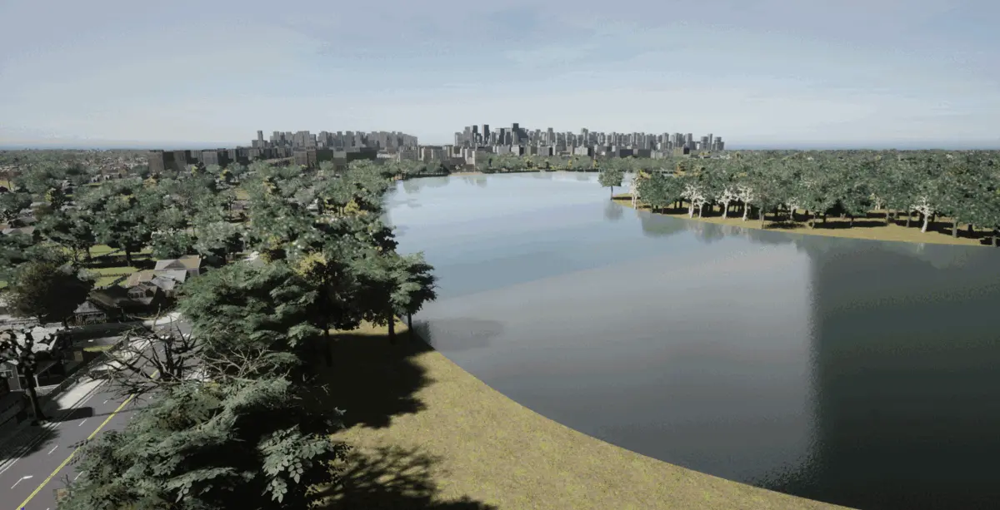
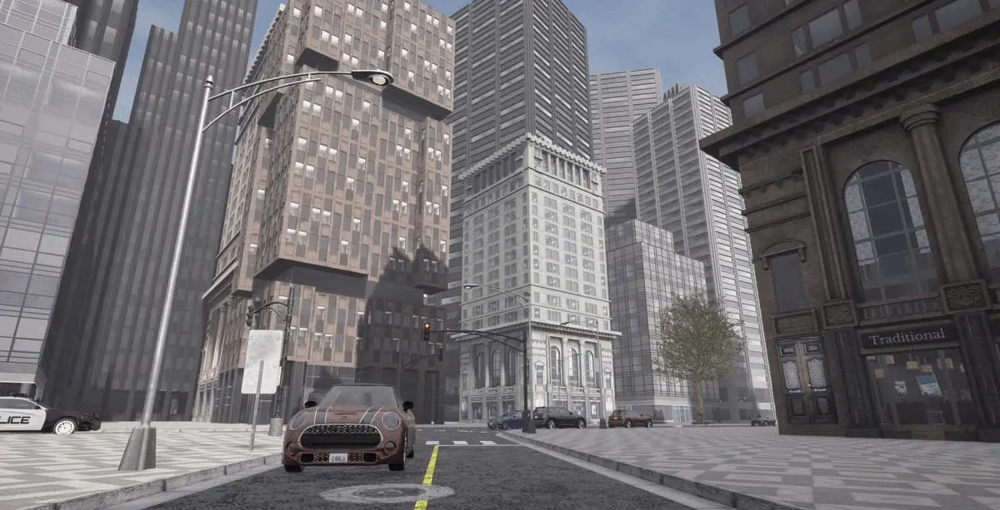
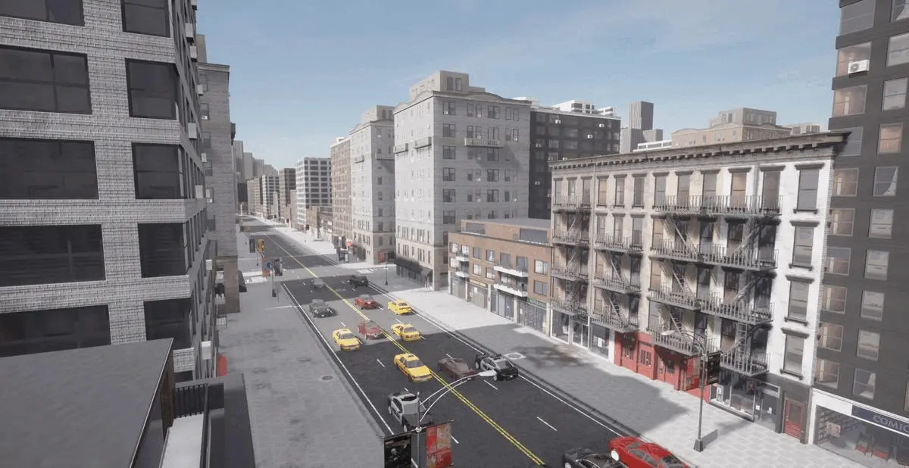
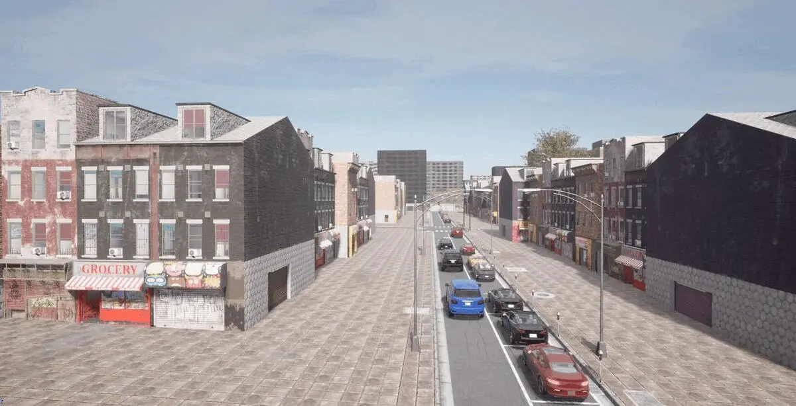
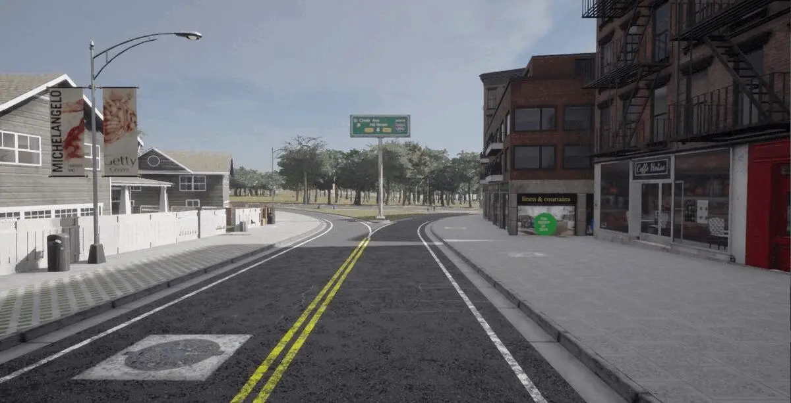
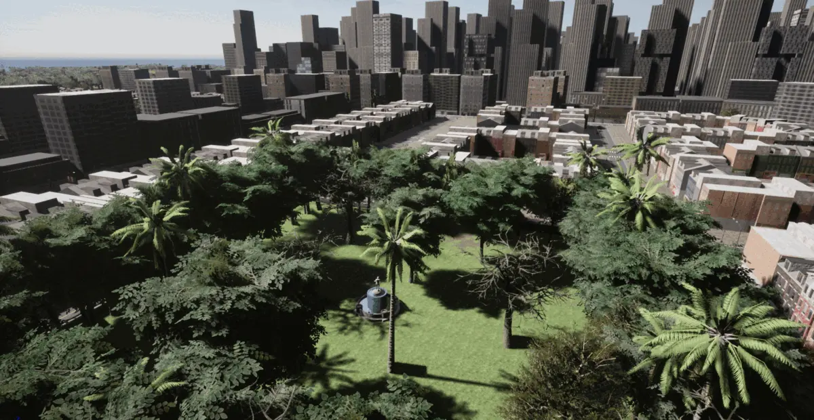
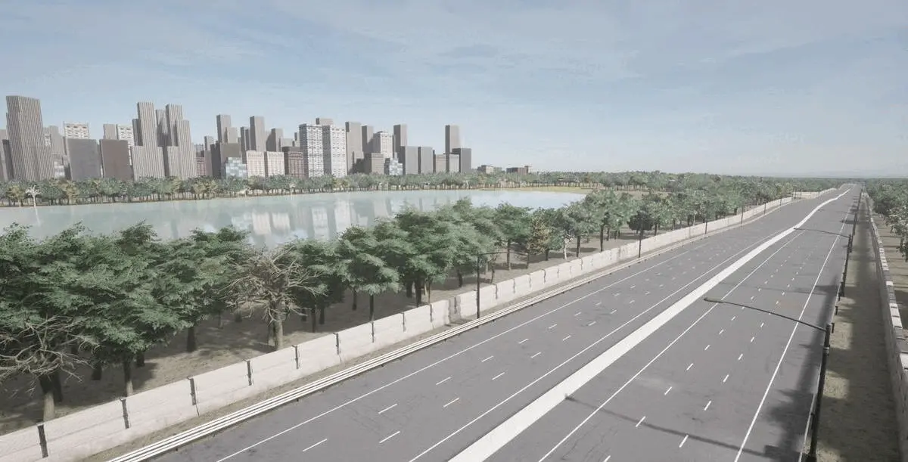
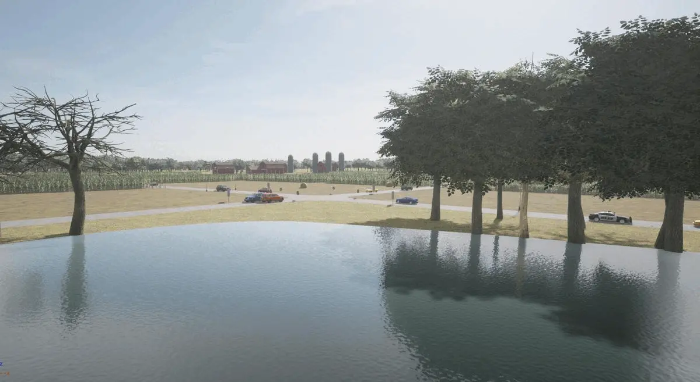

城镇 12¶

城镇 12 是一张尺寸为 10x10 km2 的大地图。它分为 36 个图块，大多数尺寸为 2x2 km2（某些边缘图块较小）。道路布局部分受到 美国德克萨斯州阿马里洛市 道路布局的启发。有许多与城市形成鲜明对比的区域，包括城市、住宅区和乡村地区，还有环绕城市的大型高速公路系统和环形公路。建筑风格反映了北美许多大中城市的建筑风格。
导航器¶
导航器交互式地图可用于浏览城镇并导出坐标以在 Carla 模拟器中使用。
使用导航器:
left mouse button- 单击并按住，向左、向右、向上或向下拖动以移动地图scroll mouse wheel- 向下滚动缩小，向上滚动放大鼠标指针下方的位置double click- 双击地图上的某个点来记录坐标，您将在文本和地图正下方的代码块中找到坐标
区域颜色参考:

Carla 坐标:
- X: --
- Y: --
双击兴趣点后，导航器将显示相应的 Carla 坐标并在以下代码块中更新它们。将代码复制并粘贴到笔记本或 Python 终端中，将观察者移动到所需的位置。您首先需要连接客户端并设置世界对象 ：
# Carla 坐标: X 0.0, Y 0.0
spectator = world.get_spectator()
loc = carla.Location(0.0, 0.0, 500.0)
rot = carla.Rotation(pitch=-90, yaw=0.0, roll=0.0)
spectator.set_transform(carla.Transform(loc, rot))
城镇 12 区¶
市中心高层建筑：¶
城镇 12 的市中心区域是一大片高层摩天大楼，在一致的道路网格上排列成街区，类似于许多美国和欧洲大城市的市中心区域。

高密度住宅：¶
城镇 12 的高密度住宅区拥有许多 2 至 10 层的公寓楼，街道上还设有咖啡馆和零售店等商业地产。

社区建筑：¶
社区建筑是一组 2-4 层的公寓楼，色彩缤纷的波西米亚风格，底层设有咖啡馆和精品店，毗邻市中心区。

低密度住宅：¶
城镇 12 的低密度住宅区反映了许多美国城市的经典郊区，一层和两层的住宅周围环绕着围栏花园和车库。

公园：¶
密集的住宅区和市中心被绿色公共空间的小岛所分割，绿叶与城市建筑并置。

高速公路和交叉路口：¶
城镇 12 拥有广泛的高速公路系统，包括 3-4 车道高速公路，其中散布着令人印象深刻的环岛路口和十字路口。

农村和农田：¶
城镇 12 还有乡村地区，有特色农田建筑，如木制谷仓和农舍、风车、粮仓、玉米田、干草垛和乡村围栏。这些地区有未标记的乡村土路和用于城际交通的单车道城际道路。

水域：¶
城镇 12 中有多个水域，包括 2 个大湖和几个池塘。由于城市旁边有一些大型水景，这些水景会产生天际线的倒反射，给自动驾驶代理带来挑战。
